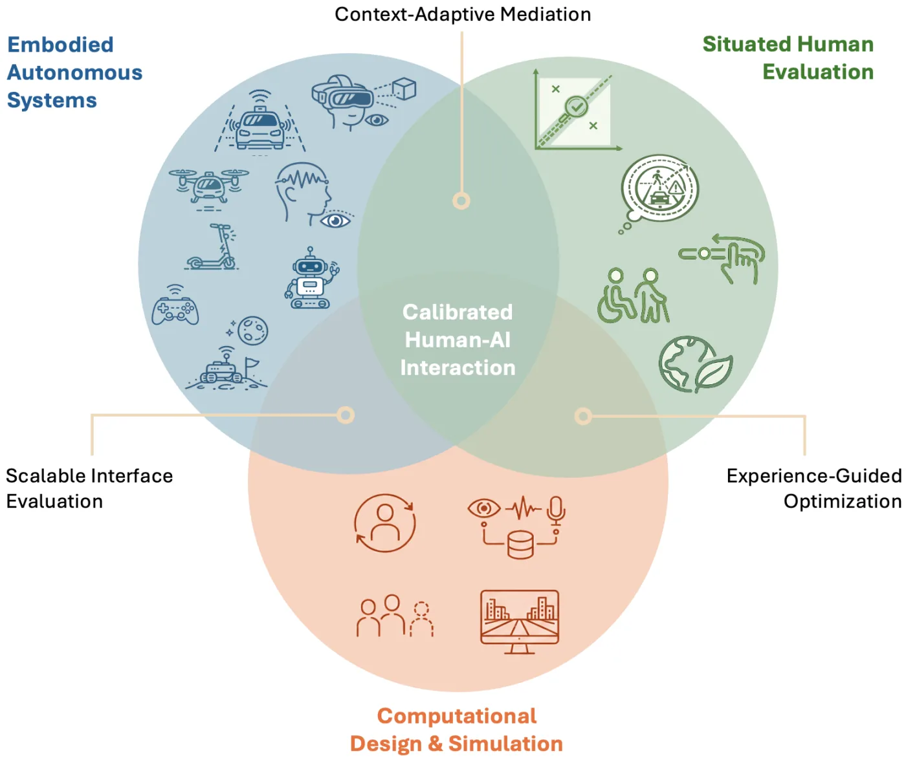
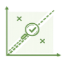
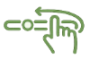

This page describes the research directions, thesis opportunities, and ways of working I am excited to supervise and collaborate on.

Embodied Autonomous Systems
I study interactive systems in contexts where technology changes what people can perceive, understand, and do. These contexts are interesting because established interface assumptions often break down when systems move into vehicles, public spaces, mixed reality, robots, or extreme environments.
- Automated vehicles and future mobility: Future mobility systems must communicate capability, uncertainty, intent, and failure clearly enough for people to trust, monitor, and intervene when needed.
- Spatial interaction: Augmented and virtual environments can change what users see and attend to, raising questions about how interfaces should reveal, simplify, or restructure complex surroundings.
- Robots, teleoperation, and shared human-machine environments: Autonomous and semi-autonomous machines need interfaces that make their behaviour legible, controllable, and usable for people nearby or operating them remotely.
- Brain-computer interfaces, eye tracking, and novel embodiment paradigms: New input and feedback channels create opportunities to study how people control, sense, and experience interactive systems beyond conventional mouse, touch, and screen interaction.
- Serious games and gameful interactive systems: Gameful systems can make complex risks, behaviours, and social situations experiential, enabling projects that study learning, awareness, and behaviour through interaction.
- Space and extreme-environment interaction: Extreme environments challenge basic assumptions about perception, movement, feedback, and control, creating design problems that cannot be solved by standard interface patterns.
Situated Human Evaluation
I investigate how interactive systems can be aligned with the experiences people need for safe, usable, and trustworthy interaction. This includes studying how interfaces shape trust, awareness, agency, accessibility, and long-term acceptance in real use contexts.

User state calibration: People need appropriate expectations of what a system can perceive, predict, and do, especially when automation is uncertain or imperfect.- Situation awareness: Interfaces should help users understand what is happening and what may happen next without creating information overload.

Agency, control, and contestability: Adaptive systems should keep users meaningfully involved when they change, recommend, intervene, or make consequential decisions.- Accessibility, inclusion, and diverse user needs: Interfaces should fit people with different abilities, backgrounds, preferences, and situational constraints.
- Sustainability and long-term societal impact: Interactive systems can shape everyday decisions and should support socially and environmentally responsible behaviour where design has real influence.
Computational Design & Simulation
I develop computational methods for designing and evaluating interactive systems when manual design iteration is too slow, too narrow, or too difficult to scale. These methods help explore larger design spaces, personalize interfaces, and test future systems before deployment.
- Human-in-the-loop optimization: Human feedback can guide optimization methods to search large interface design spaces and personalize parameters for individual users.
- Implicit and multimodal feedback loops: Behaviour, physiology, interaction traces, language, and context can provide design-relevant signals when explicit ratings are sparse, costly, or disruptive.
- User simulation and synthetic users: Computational models can approximate user behaviour to pretest interface concepts, compare design alternatives, and identify promising directions before empirical studies.
- Simulation-based evaluation of interaction concepts: Virtual and computational environments enable early testing of interaction concepts that are difficult, unsafe, expensive, or premature to study in the real world.
Build, study, explain
I like projects that combine a meaningful interaction problem, a working prototype, and a careful empirical study. This reflects an artifact-centered HCI approach grounded in research through design: we build systems to make interaction ideas concrete, study them with people, and explain what the results mean for design, theory, and future systems.
My projects usually lead to both a clear research contribution and a reusable artifact, design space, tool, dataset, or analysis pipeline that others can inspect, reproduce, and build on.
I value open science where it is feasible and responsible: transparent methods, reusable materials, documented code, shared datasets when ethically possible, and clear reporting of design decisions and limitations.
A good fit to work with me does not require having all skills already. It does require curiosity about people and systems, comfort with iterative work, and willingness to connect design claims to evidence.
Strong projects usually begin with a solid grounding in HCI theory, methods, and related work. The following readings are useful starting points:
HCI foundations
- Stanford HCI Qual Exam Reading List: Google Doc
- Introduction to Human-Computer Interaction (by Kasper Hornbæk, Per Ola Kristensson, and Antti Oulasvirta): Oxford University Press (open access)
- The Encyclopedia of Human–Computer Interaction: Interaction Design Foundation
- The Design of Everyday Things (by Don Norman): Nielsen Norman Group
- Foundations and Trends® in Human–Computer Interaction series: Emerald Publishing
Research methods and evidence
- Research Contributions in Human-Computer Interaction (by Jacob O. Wobbrock and Julie A. Kientz): ACM DL
- Research Methods in Human-Computer Interaction (by Jonathan Lazar, Jinjuan Heidi Feng, and Harry Hochheiser): Science Direct
- Modern Statistical Methods for HCI (edited by Judy Robertson and Maurits Kaptein): Springer Nature
Interaction and computational design
- Pick, Click, Flick!: The Story of Interaction Techniques (by Brad A. Myers): ACM DL
- Computational Interaction (edited by Antti Oulasvirta, Per Ola Kristensson, and Xiaojun Bi): Oxford University Press
- Bayesian Methods for Interaction and Design (edited by John H. Williamson, Antti Oulasvirta, Per Ola Kristensson, and Nikola Banovic): Cambridge University Press
- 3D User Interfaces: Theory and Practice (by Joseph J. LaViola Jr., Ernst Kruijff, Ryan P. McMahan, Doug A. Bowman, and Ivan P. Poupyrev): Google Books
Email pascal.jansen@uni-ulm.de with your background, the topic you are interested in, and one paper or project from this website that connects to your idea.